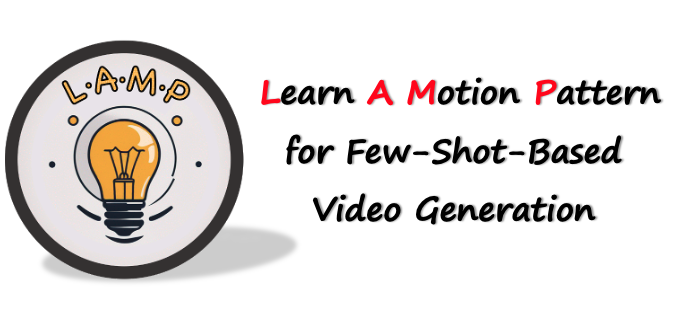
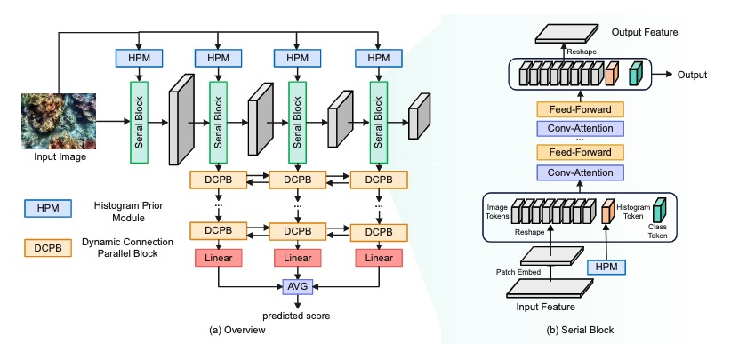
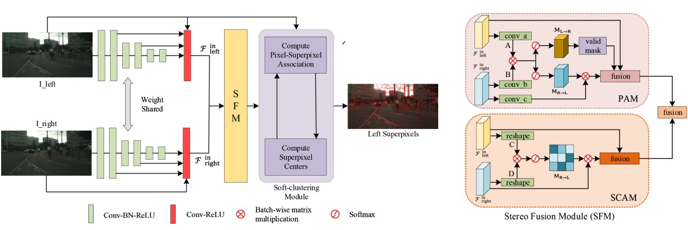
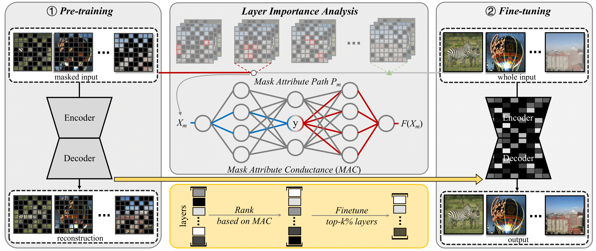

Rui-Qi Wu (武睿祺)
Rui-Qi Wu is a PhD candidate of TMCC, College of Computer Science, Nankai University, under the supervision of Prof. Ming-Ming Cheng. He received the B.E. degree from Wuhan University of Technology (WHUT) in 2022. His research interests are in computer vision and machine learning, with a particular focus on AIGC.
Recent News
Jul 2024
One paper accepted by ECCV 2024
Feb 2024
One paper accepted by CVPR 2024
Nov 2023
Served as reviewer for CVPR 2024
-
Sep 2023
Served as reviewer for IEEE TPAMI and TCSVT
-
Jul 2023
Served as reviewer for AAAI 2024
-
Mar 2023
One paper accepted by IEEE TMM
-
Feb 2023
One paper accepted by CVPR 2023
-
Jan 2023
AAAI 2023 paper awarded Oral Presentation
-
Dec 2022
Served as reviewer for Neurocomputing
-
Nov 2022
One paper accepted by AAAI 2023
-
Apr 2022
Third Place in Megcup 2022 RAW Image De-noising
-
Apr 2022
Second Runner-up in CVPRW 2022 Night Photography Challenge
-
Mar 2021
ICME 2021 paper accepted as Oral Presentation
Publications
- 
-

- 
- 
- 
Honors & Awards
National Scholarship, 2023
Top 0.2% student in China
RAW Image Blind De-noising Competition
Second Runner-up (Team Feedforward), Megcup 2022
Night Photography Rendering Challenge
Second Runner-up (Team Feedback), CVPR Workshop 2022
Kaggle Cassava Leaf Disease Classification
Bronze Medal (Top 7%, 256/3900)